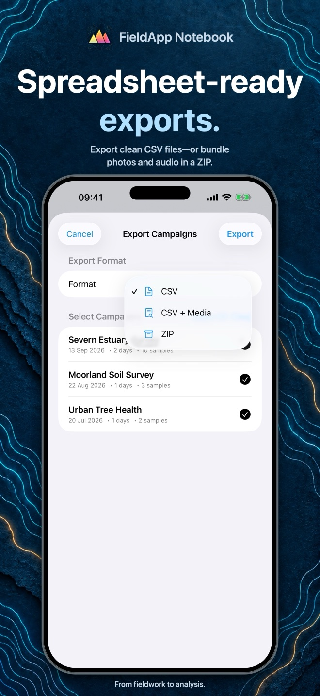

Fieldwork guide / 03
How to export field observations to Excel
Move from a saved sample set to a spreadsheet you can inspect and analyse. Choose the right export, preserve the original files, and keep photographs and recordings matched to their records.

1. Choose an export format
| Format | What you receive | Use it when |
|---|---|---|
| CSV | One spreadsheet for this sample set. Attachments are listed but their files are not included. | You only need tabular observations. |
| CSV + Media | The spreadsheet plus separate photo and audio files. | Your chosen sharing destination can receive multiple files. |
| ZIP Archive | One archive containing the CSV, photographs and recordings. | You want to transfer the set and its media together. |
For a first export with attachments, ZIP is a straightforward choice: it keeps the package together during transfer. Unzip it before working with the CSV and media folders.
2. Export one sample set
- Open the campaign and the sample set containing the saved observations.
- Choose its Export Sample Set control, shown with a share icon.
- Select CSV, CSV + Media or ZIP Archive, then tap Export.
- Use the system share sheet to save or send the result. Save to a local Files location if you are offline; email and cloud destinations may need a connection.
The set must contain saved samples. This workflow produces one CSV containing that set's records; exporting a selection from the global Samples browser uses a different layout, with individual CSVs per selected sample.
3. Open and check the CSV
Keep an untouched copy of the export. If it is a ZIP, extract it, then open the CSV in Excel. If columns, dates or identifiers are interpreted incorrectly, use Excel's text/CSV import controls instead of relying on automatic opening.
In desktop versions that provide it, choose Data → From Text/CSV. Preview the columns, use the comma delimiter, and set identifier columns to Text before loading when leading zeros matter. Menus vary by Excel version and platform; see Microsoft's CSV import instructions.
A sample-set CSV includes context columns such as campaign, sample_set_name, sample_name and timestamp, followed by the form's exported fields. Location fields produce latitude and longitude columns.
- Compare the number of data rows, excluding the header, with the saved samples in the set.
- Check a familiar record's name, date and numeric measurements.
- Confirm that identifiers such as
001have not become1. - Inspect missing values and check your units before analysing or combining sets.
If you add formatting, formulas or extra sheets, save the working analysis as an Excel workbook separately from the original CSV. Editing that spreadsheet does not update the records stored in FieldApp.
4. Match attachments to records
The CSV's photo and audio fields contain file references. In a ZIP export, these point into the photos/ and audio/ folders. The filenames combine a readable sample-set name, sample name, field name and attachment number; characters are cleaned for file compatibility and collisions can add a suffix.
For example, a fictional reference might look like photos/Site_A_Point_001_Site_photograph_01.jpg. Use the actual reference in your CSV as the match, rather than reconstructing a filename yourself. These are file references, not a promise of clickable Excel hyperlinks.
Keep the extracted folder structure intact. Renaming or moving a media file without updating your analysis can break that association. A CSV-only export lists attachments but cannot transfer the images or recordings by itself.
5. Preserve originals and backups
Keep the original export beside your working spreadsheet, ideally with a date and a short note about what it contains. Check the files before relying on them as a handover to a colleague. Review notes, audio, photographs and precise coordinates before sharing potentially sensitive fieldwork.